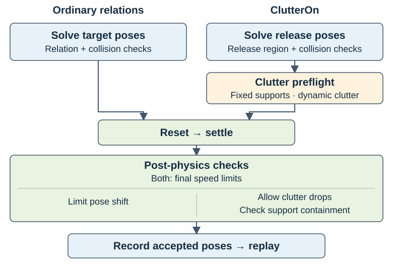
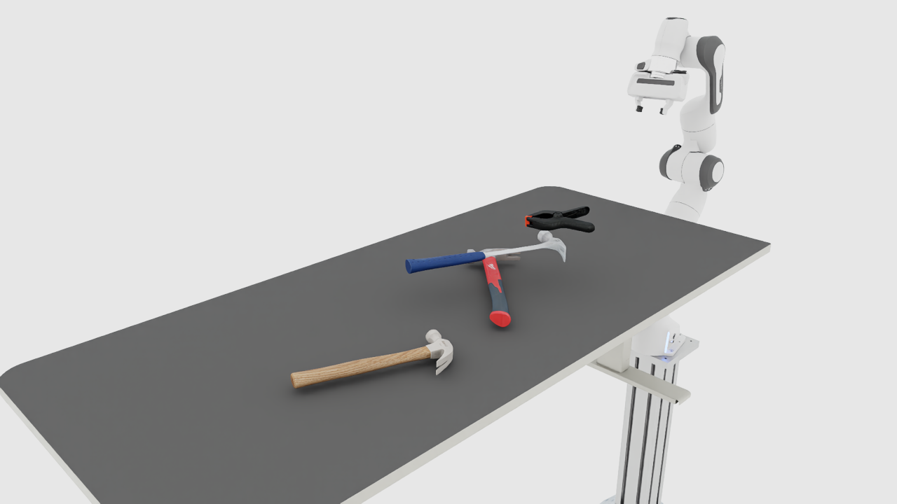
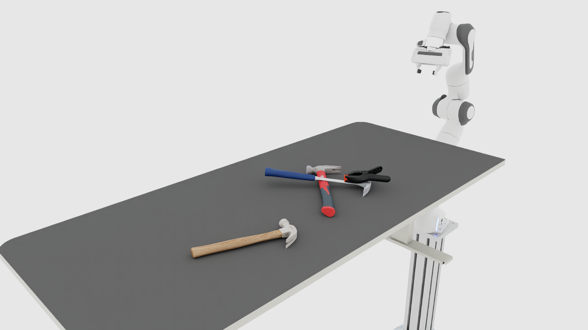
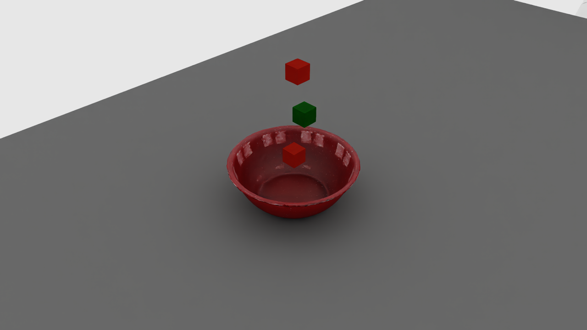
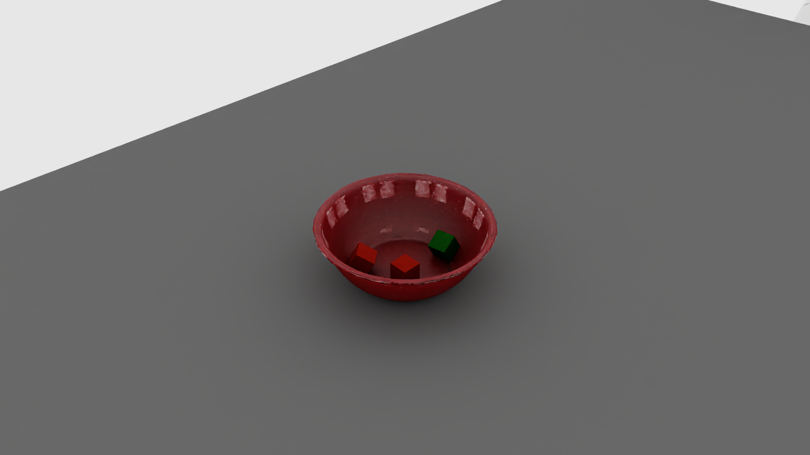

Clutter Layouts#
Use ClutterOn to release objects above a fixed support, let physics settle
them, and save accepted layouts for later resets. The same
recorder handles ordinary placement relations and clutter.
How ClutterOn Recording Differs from Other Relations#
Ordinary relations describe the intended arrangement before physics. The default
recording checks require objects to settle close to those solved poses.
ClutterOn instead describes a release region: its objects are expected to
fall and rotate before reaching their resting poses.
Clutter recording adds a scene preflight for fixed supports, dynamic clutter
and gravity. Release layouts must pass no_overlap and
clutter_on_relation. After physics, pose_shift excludes clutter roots,
while support_containment checks their final footprint and minimum height.
Root velocity checks still apply to clutter and other recorded roots.


Clutter uses the shared recording pipeline with different acceptance checks. Saved layouts pass the required solver checks and every applicable enabled post-physics check.#
Record One Table Layout#
Use an installed Arena runtime and run the
commands from the repository root. These examples use PhysX on CPU. A viewer
requires a graphical display; for headless recording, replace
render=true --viz kit with render=false --viz none. Use a new output
path for each run; recordings are not overwritten.
The maintained scene releases three hammers and a clamp above an office table. Record one accepted layout:
python isaaclab_arena/scripts/record_placement_layouts.py \
env_spec=isaaclab_arena_environments/clutter/franka_three_hammers_and_clamp_no_task.yaml \
output=outputs/clutter/tools_on_table.jsonl \
num_envs=1 min_layouts=1 layouts_per_env=1 max_batches=15 seed=42 \
settle.num_steps=480 \
+settle.validators.support_containment.minimum_resting_heights_m.office_table_background=0.5306 \
presets=physx render=true --device cpu --viz kit
The table has sloped edges around its flat top. 0.5306 is its measured
surface height in the scaled table-local frame, in metres. office_table_background is the runtime
scene key, not the YAML node ID table. A leading + adds this new key to
Hydra’s configuration dictionary; existing fields such as settle.num_steps
use plain =.
The command attempts at most 15 reset-and-settle batches. It stops after one layout passes the required solver checks and all applicable enabled post-physics checks. The acceptance criteria are described under Clutter Recording Checks.


An example solver layout before settling. Sampled positions vary by run.#


The corresponding accepted layout after settling. Acceptance is determined by the recorded checks, not by the image alone.#
Check the Output#
On success, outputs/clutter/tools_on_table.jsonl contains exactly one line.
The console reports progress and then a line of this form:
[recording] batch <batch>/15: 1/1 collected
Saved 1/<attempted> accepted layouts: outputs/clutter/tools_on_table.jsonl
Every saved layout has passed the required solver checks and all applicable enabled post-physics checks. The file stores the final root poses, validator settings and outcomes. Replay restores these root poses; joint states and other randomized properties still follow the environment’s reset configuration.
Inspect the recorded root names and validation reports:
python - <<'PYTHON'
import json
from pathlib import Path
path = Path("outputs/clutter/tools_on_table.jsonl")
records = [json.loads(line) for line in path.read_text().splitlines() if line.strip()]
assert len(records) == 1, f"Expected one layout, got {len(records)}"
placement = records[0]["variations"]["scene.relation_placement"]
print("Source:", placement["source"])
print("Roots:", sorted(placement["poses"]))
print(json.dumps(placement["validation"], indent=2))
PYTHON
source, poses, and validation all belong to the
scene.relation_placement variation. An enabled, applicable post-physics check
must have passed: true. passed: null denotes a skipped check with a reason.
For larger targets, exhausting the batch budget can produce a partial file.
Every layout in that file has passed the same checks. With zero accepts,
no file is written. A shortfall is logged as an error and the command returns
normally. Compare the reported count with min_layouts to distinguish a
completed target from partial output. See Troubleshoot Recording
if too few layouts are accepted.
Replay in the Viewer#
Load the same scene and the file just recorded:
python isaaclab_arena/scripts/environment_runner.py \
--env_spec isaaclab_arena_environments/clutter/franka_three_hammers_and_clamp_no_task.yaml \
--placement_layouts outputs/clutter/tools_on_table.jsonl \
--num_envs 1 --device cpu --viz kit
The viewer starts with the recorded arrangement. These examples use NoTask:
they load the first layout and do not trigger episode resets. Close the viewer
or press Ctrl-C to exit. Physics continues after reset. Keep the same backend,
asset geometry and joint-reset configuration when replaying the recording.
For policy evaluation, configure the same scene in an Experiment and pass this
file as its placement layouts. Follow the evaluation replay instructions and Replay Configuration;
an experiment using a different scene’s root names cannot replay this file.
The NoTask examples demonstrate placement, not task success.
Record a Batch#
After the one-layout example works, request ten layouts across four environments. This headless command writes a separate file:
python isaaclab_arena/scripts/record_placement_layouts.py \
env_spec=isaaclab_arena_environments/clutter/franka_three_hammers_and_clamp_no_task.yaml \
output=outputs/clutter/tools_on_table_batch.jsonl \
num_envs=4 min_layouts=10 layouts_per_env=4 max_batches=15 seed=42 \
settle.num_steps=480 \
+settle.validators.support_containment.minimum_resting_heights_m.office_table_background=0.5306 \
presets=physx render=false --device cpu --viz none
Success means ten rows, with all accepted layouts passing their applicable
checks. A run may need more than ten attempts. Acceptance counts and poses can
vary across machines and backends even with the same seed. layouts_per_env
controls solver pool refills, not the output count. See
Record Placement Layouts for defaults and the settling duration.
Record Cube Clutter in a Bowl#
The second maintained scene releases three cubes into a fixed YCB bowl:
python isaaclab_arena/scripts/record_placement_layouts.py \
env_spec=isaaclab_arena_environments/clutter/franka_three_cubes_in_bowl_no_task.yaml \
output=outputs/clutter/three_cubes_in_bowl.jsonl \
num_envs=1 min_layouts=1 layouts_per_env=1 max_batches=15 seed=42 \
settle.num_steps=480 \
+settle.validators.support_containment.minimum_resting_heights_m.bowl=-0.025 \
presets=physx render=true --device cpu --viz kit
Note
During bowl setup, PhysX may report kinematic bodies with CCD enabled are
not supported! CCD will be ignored. The fixed bowl asset enables continuous
collision detection (CCD), which PhysX ignores for that kinematic body. This
message does not disable CCD on the falling cubes.
Here bowl is the support’s runtime scene key. -0.025 is a minimum
resting height in the scaled bowl-local frame, before adding its world position.
It permits settling below the rim. It is not a world-Z coordinate or the rim
height. For another container, measure its own interior floor instead of copying
this value. See Support Floor Height.
The containment check uses the support’s bounds and this height. It does not prove exact containment within curved walls or exclude every possible penetration. Inspect the contacts as well as the saved validation reports.


An example release layout above the bowl rim.#


The corresponding accepted layout after settling.#
Success produces one row in outputs/clutter/three_cubes_in_bowl.jsonl.
Inspect it with the earlier Python snippet, changing path to this bowl
recording, then open the viewer:
python isaaclab_arena/scripts/environment_runner.py \
--env_spec isaaclab_arena_environments/clutter/franka_three_cubes_in_bowl_no_task.yaml \
--placement_layouts outputs/clutter/three_cubes_in_bowl.jsonl \
--num_envs 1 --device cpu --viz kit
Adapt Your Own Environment#
Use the registration and factory path maintained by your environment package.
Register its assets, tasks, and embodiments before resolving them, and start
SimulationApp before simulator-dependent imports. Build the complete
IsaacLabArenaEnvironment description through that factory so its task,
physics callbacks, and runtime configuration are retained. Loading raw YAML is
not a substitute for a factory that also applies these settings.
The supplied scenes meet these requirements. When adapting another scene:
Use fixed
IsAnchorsupports with static or kinematic collision geometry. Supports must be upright, with only quarter-turn rotations about world Z.Use dynamic rigid objects with gravity enabled for clutter. Each has one
ClutterOnspatial relation to its support.Resolve non-clutter placement relations to fixed anchors before collection. Object sets and reachability requirements on clutter objects are unsupported.
Keep recorded roots compatible with pose resets. Joint states and other randomized properties are not saved.
Use ClutterOn settings to choose release spread, clearance and rotations. For containers or supports without a verified flat top, provide a measured support-local floor height.
For example, the table scene fixes the table as an anchor and gives each tool
a ClutterOn relation with a smaller release region:
relations:
- kind: is_anchor
subject: table
- kind: clutter_on
subject: wood_hammer
reference: table
params:
spread: 0.7
- kind: clutter_on
subject: red_hammer
reference: table
params:
spread: 0.7
- kind: clutter_on
subject: blue_hammer
reference: table
params:
spread: 0.7
- kind: clutter_on
subject: clamp
reference: table
params:
spread: 0.7
The following is a runnable built-in equivalent of passing a factory-built
description to the recorder. Save it as outputs/clutter/record_python.py;
the output JSONL path must be unused:
import argparse
from isaaclab.app import AppLauncher
from isaaclab_arena.utils.isaaclab_utils.simulation_app import SimulationAppContext
parser = argparse.ArgumentParser()
AppLauncher.add_app_launcher_args(parser)
args = parser.parse_args()
with SimulationAppContext(args):
from isaaclab_arena.environment_spec.arena_env_graph_spec import ArenaEnvGraphSpec
from isaaclab_arena.offline_placement.recording_config import PlacementRecordingCfg
from isaaclab_arena.scripts.record_placement_layouts import record_settled_placement_layouts
source = "isaaclab_arena_environments/clutter/franka_three_hammers_and_clamp_no_task.yaml"
arena_env = ArenaEnvGraphSpec.from_yaml(source).to_arena_env()
# For your package, replace the preceding line with its configured factory call.
cfg = PlacementRecordingCfg(
output="outputs/clutter/tools_python.jsonl",
num_envs=1, min_layouts=1, layouts_per_env=1, max_batches=15,
presets="physx",
)
cfg.settle.num_steps = 480
cfg.settle.validators["support_containment"] = {
"minimum_resting_heights_m": {"office_table_background": 0.5306},
}
summary = record_settled_placement_layouts(cfg, device=args.device, arena_env=arena_env)
print(summary.output, summary.accepted, summary.attempted, summary.rejections)
assert summary.accepted == cfg.min_layouts, "Recording target not reached"
python outputs/clutter/record_python.py --device cpu --viz none
The high-level API builds and closes the simulation environment. Supplying
arena_env retains that description’s callbacks and settings; cfg.presets
is an explicit backend override. Omit it to keep your environment’s preset.
Recording overrides placement sampling settings, including its seed and pool
refill size. Do not reuse those recording seed settings unchanged for replay.
See Replay Configuration for the required reset configuration.
If you already own a built environment, use the caller-owned recording APIs and pass the full
arena_env.get_placement_assets() list. These APIs leave the environment open
at its final state. Use env.unwrapped when accessing Isaac Lab attributes
through a Gym wrapper. Preserve the same geometry, root names, joint resets,
and physics settings when replaying in your environment.
Troubleshoot Recording#
Scene setup errors name the unsupported asset or setting. Use Fix Setup and Replay Errors to fix support mobility, orientation, release-region or replay-configuration problems before changing acceptance limits.
When too few layouts pass, inspect the printed rejection summary:
physics_settledmeans a root exceeds the final speed limits. Inspect contacts and increasesettle.num_stepsif the scene needs more time to settle.support_containmentmeans clutter failed a release check, the support moved, or final bounds extend beyond the footprint or below the minimum height. Check the support geometry and configured floor height.pose_shiftidentifies a non-clutter root that moved too far. Check whether clutter hit a fixture or robot; intentional clutter drops are excluded.
Increasing max_batches gives more attempts without relaxing the checks.
Acceptance counts can vary across machines and backends; a partial recording
still contains usable layouts that passed validation.